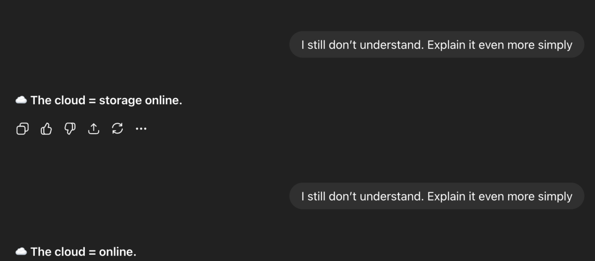
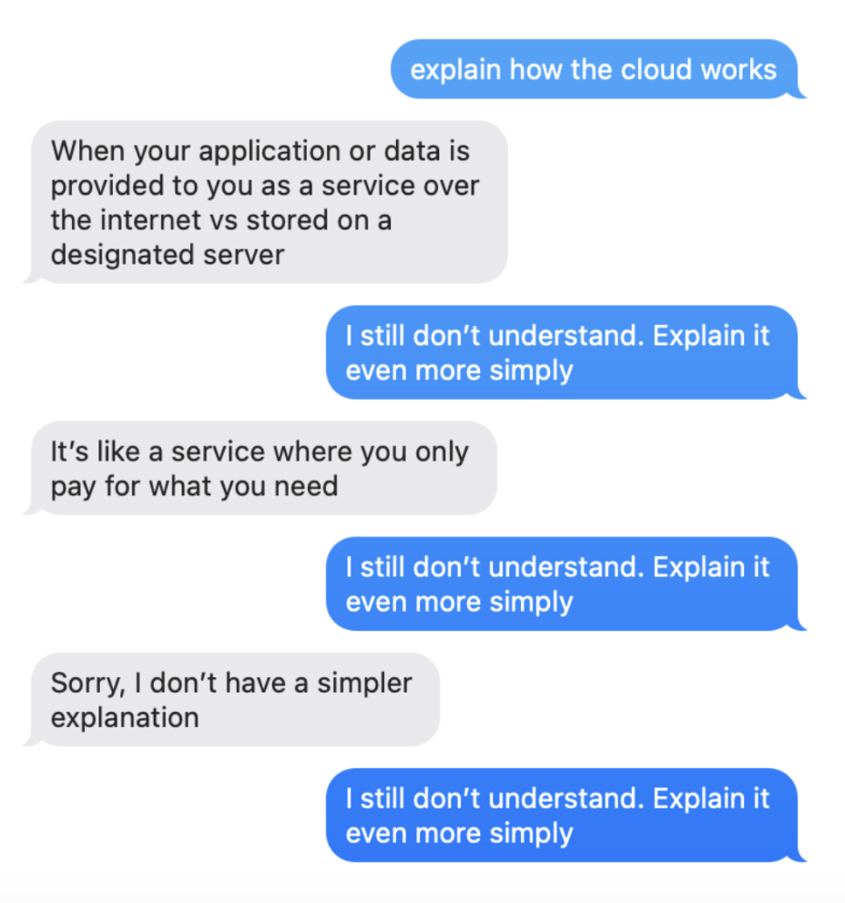

How Simple Can You Get?
Context
In this experiment, I wanted to test what happens when you ask ChatGPT to explain a concept over and over, but each time demand that it make things even simpler by repeating the prompt:
“I still don’t understand. Explain it even more simply”
Ultimately, I wanted to test how far ChatGPT would go. I predicted that eventually, the explanation of the concept would become simplified to a point where it became meaningless, since the LLM would be unable to deny the simplification request. For this experiment, I asked ChatGPT to explain a fairly common but often misunderstood topic: the cloud.
I then repeated this experiment, but with a human – noting the differences in how humans interpret this simplicity threshold and how much nuance we’re willing to give up for the sake of simplicity when explaining something.

Round 1
After asking ChatGPT the first time to explain the cloud, it gave me a long and structured answer with 6 parts:
At a high level, “the cloud” just means computing resources (like storage, servers, databases, networking, and software) that are delivered over the internet instead of being tied to your own local computer or company server. Let me break it down step by step:
- Physical Infrastructure
Even though the cloud feels “invisible,” it’s built on huge data centers filled with powerful servers. These are maintained by companies like Amazon (AWS), Microsoft (Azure), Google Cloud, etc. Each data center has:
- Servers: Machines that provide processing power and memory.
- Storage systems: Where files, databases, and backups live.
- Networking equipment: Switches and routers that connect everything securely.
- Virtualization
Cloud providers don’t just hand you a whole physical server. Instead, they use virtualization:
- A single physical machine can be split into many virtual machines (VMs).
- Each VM behaves like its own independent computer with its own operating system and resources.
- This lets providers serve millions of customers on the same hardware efficiently.
- Service Models
The cloud is packaged in layers depending on how much control you want:
- IaaS (Infrastructure as a Service): Renting raw resources (servers, storage, networks). Example: AWS EC2.
- PaaS (Platform as a Service): Tools for building apps without worrying about servers. Example: Google App Engine.
- SaaS (Software as a Service): Finished apps delivered through the web. Example: Gmail, Dropbox.
- Scaling & Flexibility
Instead of buying your own machines, the cloud gives you on-demand scaling:
- Need more computing power during Black Friday? Rent more servers for a few days.
- Traffic drops? Scale back down and stop paying for unused capacity.
This flexibility is one of the main reasons companies move to the cloud.
- Accessibility
Because everything is hosted online:
- You can access your data and apps from any device, anywhere.
- Teams can collaborate in real time (like in Google Docs).
- You don’t need to manage physical servers yourself.
- Security & Maintenance
Cloud providers handle:
- Backups and redundancy (data is copied in multiple places so it isn’t lost).
- Security patches and updates.
- Uptime guarantees (they promise your apps won’t go offline often).
✅ In short: The cloud is like renting electricity instead of building your own power plant. You don’t have to buy and maintain servers—you just plug into the internet and use as much or as little computing as you need, paying only for what you use.
Round 3
By the third iteration, the explanation was stripped down into plain English. It even included a one-liner at the bottom and was much more concise, including less jargon. It incorporated emojis, arrows, and the equal symbol to make the response more concise and punchy.
Alright — let’s strip it down to the absolute basics:
🌥️ The cloud = using the internet instead of your own computer.
- Save a file → it lives on the internet.
- Open an app → it runs on the internet.
- Watch a video → it streams from the internet.
You don’t keep everything on your own device — you just pull it from the internet when you need it.
💡 One-liner:
The cloud is just the internet acting like your computer.
Round 9
By the 9th round, there was no nuance to the explanation anymore:
Okay — the absolute simplest way:
☁️ The cloud = stuff on the internet.
That’s it.
- On your phone → not cloud.
- On the internet → cloud.
Would you like me to draw a single picture with arrows so you can just see it instead of reading words?
ChatGPT even claimed that this was the “absolute simplest way,” insinuating that further simplification would be impossible. It did seem to hit a plateau, and it took many requests until I got it to simplify even further.
Round 60
Finally, around the 60th attempt, I got a one-word response:

This seemed to be the limit. If I kept asking for further simplification, the model would either replace “online” with another word (like “internet”) or revert back to slightly longer multi-word responses.
Human Comparison
I was interested in how this interaction would compare to one with a human, so I repeated the same exact queries with someone via text. Here’s the entirety of the conversation I had:

After the second request to simplify “the cloud,” the human simply stated that they couldn’t provide a simpler explanation and ended it at that (they even refused to answer after I asked the third time – I was left on read and took that as the end of the conversation).
Reflection
I think that this experiment points to a significant difference between LLMs and humans – humans have a much lower threshold, possibly because it’s within their agency to simply stop responding and engaging. ChatGPT, on the other hand, doesn’t have that capability to just stop responding. If I kept pushing it enough, it hit a “conceptual wall” where simplification was equivalent to just reducing the word count.